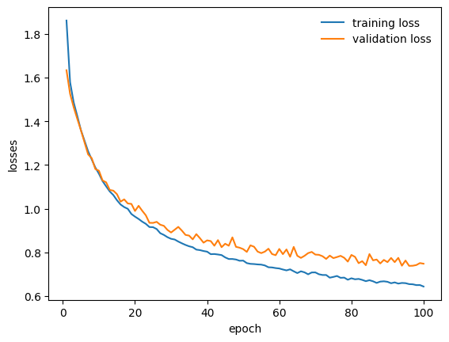

技術與工具
- PyTorch：深度學習框架，實作 CNN 模型
- 卷積神經網路 (CNN)：提取圖像特徵，進行分類
- Dropout：避免過擬合，提高模型泛化能力
- Batch Normalization：加速收斂，穩定訓練
- SE Attention 模組：強化重要特徵，提高辨識能力
- CIFAR-10 資料集：圖像分類訓練與測試
專題成果
- 成功建立 CNN 模型，對 CIFAR-10 影像資料進行分類
- 各種實驗結果：
- Baseline CNN：66.3%
- Baseline + Dropout：78.1%
- Baseline + BatchNorm：78.2%
- Dropout + BatchNorm：77.4%
- Baseline + Attention：77.9%
準確率曲線

損失變化曲線
設計說明：四層卷積 + 全連接層，Baseline 模型用來建立基準準確率。
準確率曲線
損失變化曲線
設計說明：在全連接層加入 Dropout 隨機丟棄神經元，減少過擬合，提高泛化能力。

準確率曲線
損失變化曲線
設計說明：在卷積層後加入 Batch Normalization，加速收斂並穩定訓練。
準確率曲線
損失變化曲線
設計說明：結合 Dropout 與 BatchNorm，兼顧泛化能力與訓練穩定性。
準確率曲線
損失變化曲線
設計說明：加入 SE Attention 模組，強化重要特徵，提高辨識能力。
操作說明
- 將 CIFAR-10 資料集載入程式中
- 執行不同 CNN 模型訓練程式（Baseline、Dropout、BatchNorm 等）
- 記錄訓練準確率與損失曲線
- 測試模型對測試集的分類準確度